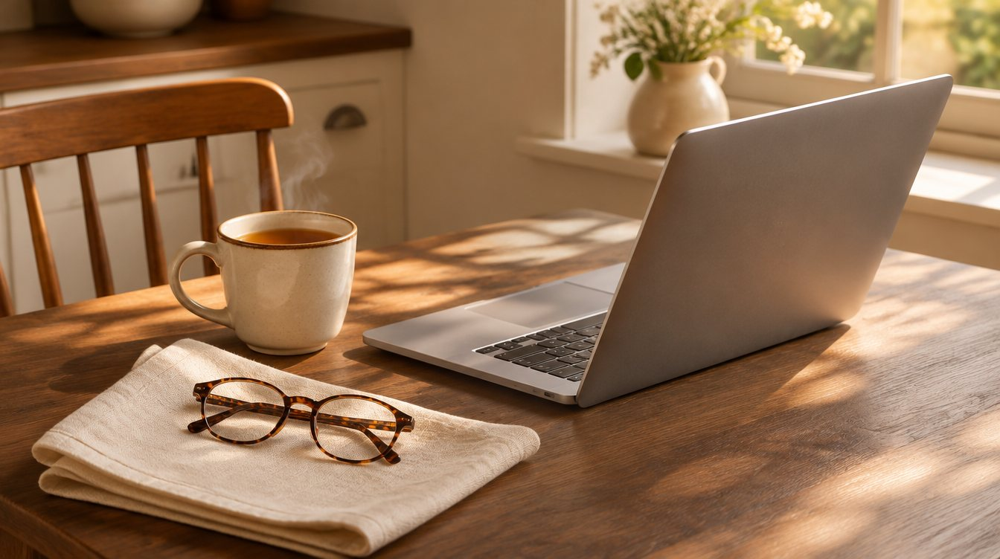
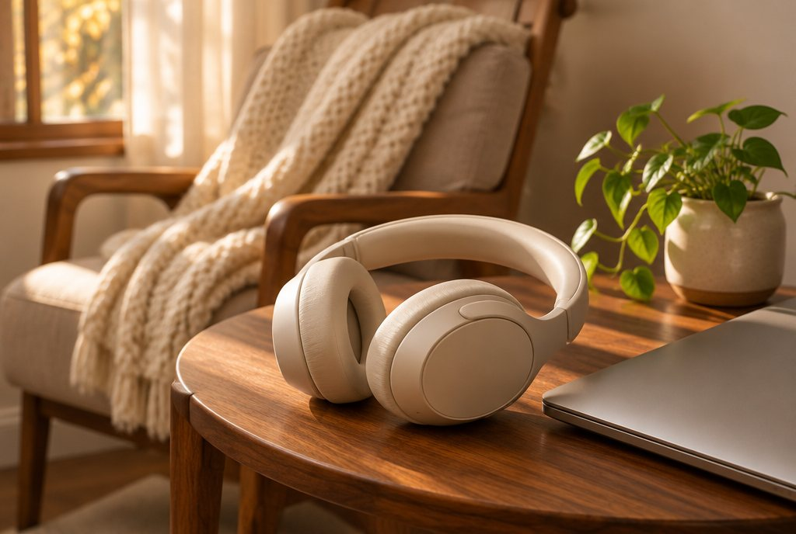

Articles in large print, in one click.
Click one button in Chrome and the article opens in big, clear letters, with nothing else in the way.
Try the reading controls here.
A sample article
This is how a story looks in Large Print Reader. Press Bigger until the words are easy on your eyes.
Press Colors to move through cream, white, dark and high contrast. Spacing opens up the lines. Letters switches between a plain style and a classic one.
The extension remembers what you pick, so the next article opens the same way.
How it works

Open an article
A news story, a blog post, or any page with a main block of text.
Click the Large Print Reader button
It sits in Chrome’s toolbar. You can also press Alt + Shift + R. The article opens in large print.
Go back when you’re done
Click the button again, press Esc, or choose Close. The page returns exactly as it was.
Where it won’t work
It needs a page with a main block of text. On a homepage or a list of headlines it says so, and reminds you how to use Chrome’s own zoom instead. Chrome also blocks extensions on its own pages, the Chrome Web Store and PDFs.
Set it up for your eyes
- Text size
- From 18 to 64 pixels. It starts at 28. The plus and minus keys change it while you read.
- Colors
- Four choices, each with its own background and text.
- Cream
- White
- Dark
- High contrast
- Space between lines
- Normal, Roomy or Extra.
- Letter style
- Plain or Classic.
- Line length
- Comfortable or Wide.
- Pictures
- Show the article’s pictures or hide them.
Your choices are saved for next time.

Plus reads the article to you
Free
The large print view and every setting above.
Plus
Plus reads any article to you out loud, using the speech voices built into your browser. You choose the speed, and each paragraph lights up as it’s read.
Plus costs $2 a month.
Payment runs through Stripe, and the charge shows as LARGE PRINT READER. Here is how refunds and cancelling work.
It doesn’t track what you read
Large Print Reader works on the page you choose, only when you click its button. It doesn’t collect or send anything about what you read.
Your size and color choices are saved in Chrome, so they are there next time.
Get it in the Chrome Web Store
Large Print Reader is free in the Chrome Web Store. Questions are welcome at lazyfreelancer1@gmail.com.
Add to Chrome Email support